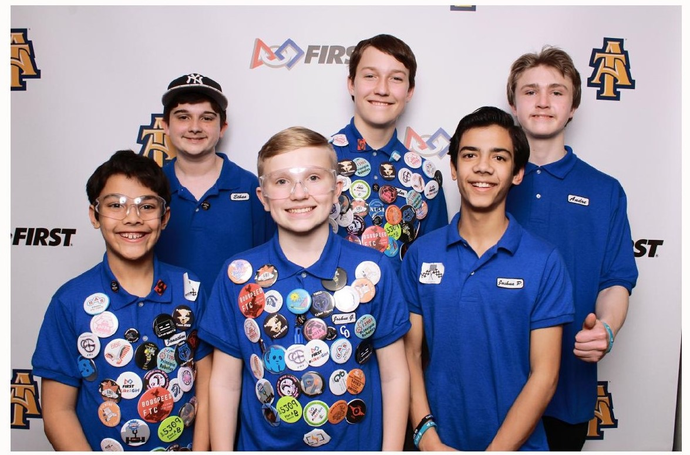

About Us
We’re The Pitt Crew, a robotics team made up of six homeschooled students from North Carolina.
Our team participates in the annual FIRST Tech Challenge (FTC). This is our third year in the
league and we're learning more every year!

We’re The Pitt Crew, a robotics team made up of six homeschooled students from North Carolina.
Our team participates in the annual FIRST Tech Challenge (FTC). This is our third year in the
league and we're learning more every year!

We’re The Pitt Crew, a robotics team made up of six homeschooled students from North Carolina. Our team participates in the annual FIRST Tech Challenge (FTC). This is our third year in the league and we're learning more every year!

FIRST has given us an amazing experience these last couple years so we have done our best to tell others about it too. We displayed our robot at a local fair where 300+ people possibly saw our booth, talked about our experience at schools, co-ops and hosted a yard sale where we shared our experience with FIRST. If you want to learn more about FIRST visit their website at https://www.firstinspires.org

Penco, a 150+ year old company providing the finest storage products available has sponsored the Pitt Crew for two years. They have impacted our team greatly with their support. Visit the sponsors tab to learn how you can get involved too!

FIST® is the world's leading youth-serving nonprofit advancing STEM education FIRST® inspires young people to be science and technology leaders and innovators by engaging them in exciting mentor-based robotics programs that build science, engineering, and technology skills, and inspire innovation, learning, and that foster well-rounded life capabilities including team work, communication, and leadership. It's a global community preparing young students for the future